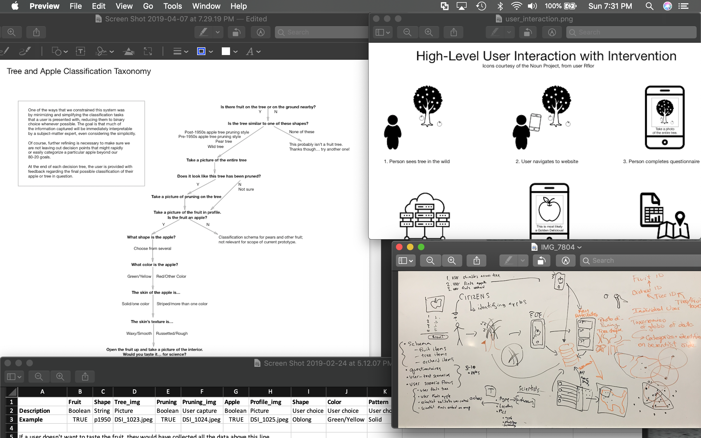
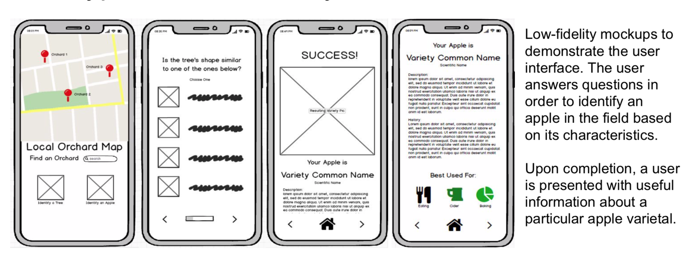
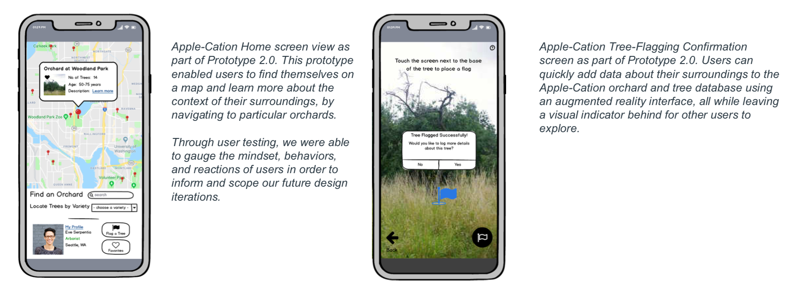

üçé Apple-Cation: Designing a Citizen Science Tool
üé¨ Video
src="https://www.youtube.com/embed/8QgniHBwF1s"
ü§î Problem Space
During the second year of my masters, I had a class focused on design inquiry and rapid prototyping. Broadly theme was on citizen science.My partner Drew and I sought to answer the following question: how might we involve citizen scientists in the aggregation and annotation of data about apple trees?
In the homebrewing scene, the Pacific Northwest is famed for both its hops and its apple cultivars. Out here, beer may be locally-sourced, but cider's supply chain is long--the PNW imports many of the fruits it uses to make cider from other countries.
Cidermakers (and researchers) are interested in identifying old growth orchards and apple trees to impart new flavors into their brews. They look for quintessentially American terroir, but don't necessarily have time to hunt down particular fruiting trees themselves.
Separately, hobbyist naturalists might be interested in the cultivation and maintenance of trees in the field. They probably care about trees, but are not expert enough to identify particular varieties themselves.
üìù Initial Research
We started the project by exploring the design space through literature review and interviews. We wanted to observe tree-related work being done in situ, to contextualize some of the things experts think about when identifying fruits.
Our strategy to narrow down our design space involved both contextual inquiry (to better understand the practical work that goes into working with fruit) and traditional interviews (to understand the theoretical models and terminology experts employ).
We initially thought that we would want to teach people how to identify fruit in the field, letting researchers know that a particular tree was worth making the trip out to see. We decided to tag along with some researchers while they did some field work.

✋ Intervention
Coordinating people to take care of orchards is a pain point that stakeholders frequently feel. It is difficult for arborists to teach people to prune correctly and harder still to prevent over-pruning of trees, especially if the orchard is not privately owned or commercially operated.
We found that cider-makers and aligned researchers can benefit from a system that enables a broader, distributed workforce assisting their efforts in the field. They need a way to share knowledge about trees.
From our literature review, we found that there is not an all-in-one tool that assists people in the classification of trees or fruits. Existing solutions are highly detailed/precise, often use technical or scientific language that might not be familiar to people without domain expertise, and are not mobile-friendly. This is an issue for us--the apple aficionado with limited domain expertise is left out.
Realizing this as a pain point, our goal was to harness the power of citizen scientists to to geolocate, photograph and measure, and definitively identify apple trees using a mobile interface. This would allow non-subject-matter experts to become conversent and share knowledge. We created a paper prototype to test the logic and user flow of our classification to see if users could correctly identify attributes in the field.
We also created a demo data repository with five types of apples in it, entered their possible identification attributes, and developed a logical flow to classify an example apple in five steps or less.

üé® Design & Refine
The goal for our first prototype was to help people unfamiliar with trees or fruits sufficiently classify them. We created a robust testing methodology and procedure, trying our our prototype over 6 individuals with varying degrees of knowledge about apples. We collected both qualitative and quantitative feedback. After completing user testing, we also asked our users to help us make our design better.
We found we can accurately predict apples a little bit better than chance, which was worse than expected. Unfortunately, we did not have a very discriminating classifier (the most important metric for us, since we want to minimize incorrect classifications in order to support better data for researchers).
Follow-up interviews with experts suggested that documenting information about trees that would be simultaneously useful for researchers but salient by the average person is a thorny problem.
Moreover, they let us know that longitudinal analysis of trees is something that is hard to come by, but also contributes significantly to the knowledge a researcher might have about fruit quality or viability.
So we decided to pivot, reconceptualizing our design.
The goal for our second prototype was to turn the process of documenting trees into an AR game. In order to test the efficacy of this system, we created a prototype of a mobile user-interface in Balsamiq that a user can navigate through in order to record specific attributes of a tree, as well as other specific tasks related to documentation.
We attempted to create a user interface that made adding information about trees fun for users. We performed more user testing, to see if a user could sufficiently navigate a mobile interface when prompted with a task in natural language, or describe their interaction with the prototype using a "talk aloud" or "think aloud" process.

We found that users really enjoyed the process of documenting trees but had trouble understanding a few things: namely, transitioning between the augmented reality's first-person view and the bird's eye view of the map.
üï∞ Future Work
Enabling researchers to understand individual trees and orchards over time is an important part of the project we didn't get to address. We would like to change the design of our UI to help people to better understand and encourage the collection of longitudinal data.
In subsequent iterations, we hope to address data quality and privacy issues in our project. One of our users was concerned with her location being accessible to other people when she used the application. We conceptually changed the way data is aggregated on the backend to address her concern.
If we were to return to this project several years out, with the advances in computer vision that have happened, we would be at the stage that we could build an actual prototype app and start working with users to see if capturing data is as effective in the field as we hypothesized it would be.